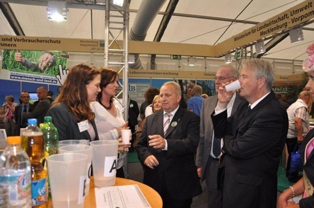

Bevor sie heute ihre Tore öffnete, fiel unter dem MeLa-GlücksKleeblatt auf den Plakaten die Auswahl der dazugehörigen vier Fotos auf.
Bild Nr.1 zeigt eine Photovoltaikanlage im Sonnenblumenfeld vor Windkraftanlagen.
Bild Nr.2 präsentiert einen Mähdrescher mit Maiserntevorsatz.
Auf den anderen beiden Bildern stehen drei Exemplare einer vom Aussterben bedrohten alten Schafrasse drei Köchen gegenüber.
Die ersten fünfzig Prozent dieser Bildsprache sind also den Energiewirten gewidmet.
Da in den USA schon über 40% der Maisernte in den Tank kommen, ist eine Entwicklung zu dieser Tendenz auch bei uns nicht weiter verwunderlich.
Dazu kommt, dass die Menschen in Deutschland nur 10 – 12 % ihres Einkommens für Lebensmittel ausgeben.
Selbst die zur MeLa erwarteten 60-70 Tausend Besucher werden ihre Ausgaben nicht so ohne weiteres neu sortieren können.
Denn auch sie haben Energiefresser durchzufüttern, die sich nicht mit leeren Versprechungen abspeisen lassen.
Neben Rasenmähern u. Laubhäckslern hat das gute Auto großen Durst und dessen Befriedigung wird ständig teurer.
In der Folge darf jetzt entlang der Autobahnen Ackerland für Solaranlagen umgewidmet werden.
"Immer mehr Kommunen verdienen Geld mit Solarparks,
die sie auf ehemals von der Land- und Forstwirtschaft genutzten Flächen bauen lassen" schrieb der Nordkurier.
Und auf der Pressemitteilung von <!-- w --><a class="postlink" href="http://www.mela-messe.de">www.mela-messe.de</a><!-- w --> des 4. September ist zu lesen:
"MeLaLandfraß Gemeinsame Initiative von Bauernverband und Landwirtschaftsministerium – eines von vielen Diskussionsthemen auf der MeLa"
Ob die Versiegelung von Ackerland durch eine Schutzklausel im Landwirtschaftsgesetz verhindert werden könnte bleibt abzuwarten.
Ja, die MeLa wirbt für moderne Güllefabriken zur Energieerzeugung.
Der Bau der Ferkelfabrik in Alt Tellin wurde erst durch die Versiegelung von 6 ha Ackerland ermöglicht.
Eine Abkehr von dieser Entwicklung ist noch nicht in Sicht.
[Anhang: <!-- ia0 -->Mela.jpg<!-- ia0 -->]
(beim Sensorik-Test)
Und so konnten auf der MeLa die Besuchermassen wieder ungerührt an einzelnen Schweinen in modernen Haltungsformen vorbeiflanieren
und die gigantische Erntetechnik der Energiewirte inhalieren.
